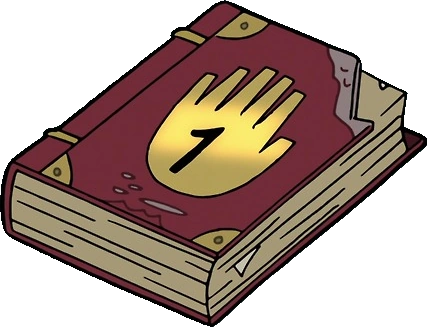

O que é Gravity Falls?
Gravity Falls é uma série animada do Disney Channel. Os irmãos gêmeos Dipper e Mabel Pines embarcam em uma aventura inesperada ao
passarem o verão com seu tio-avô na misteriosa cidade de Gravity Falls, Oregon. Logo que chegam, o tio-avô vigarista de Dipper e
Mabel, o Tio Stan, recruta os irmãos para ajudá-los a administrar a Cabana do Mistério, uma armadilha para turistas repleta de
exposições falsas que cobra preços exorbitantes de clientes desavisados. Embora Dipper e Mabel descubram rapidamente que a própria
Cabana do Mistério é uma farsa, eles pressentem que há algo estranho em sua nova cidade e, juntos, começam a desvendar os segredos
de Gravity Falls.
Dipper Pines
Mason "Dipper" Pines(nascido em 31 de agosto de 1999) é um garoto inteligente, curioso e aventureiro de 13 anos (12 anos antes dos
eventos do final da série ) e é um dos dois heróis principais da série . Junto com sua irmã gêmea Mabel , ele passa o verão de 2012
com seu tio-avô "Tio-Avô" Stan em Gravity Falls, Oregon , onde ele e sua irmã constantemente se deparam com as tendências paranormais
da cidade. Armado com o Diário 3 , que ele encontrou em um compartimento escondido enterrado na Floresta de Gravity Falls , ele e Mabel
trabalham para descobrir os misteriosos segredos da cidade.
Dipper representa o símbolo do pinheiro associado ao Zodíaco de Bill Cipher , já que está presente em seu chapéu.
Mabel Pines
Mabel Pines (nascida em 31 de agosto de 1999) é uma garota otimista, extrovertida e cheia de vida de 13 anos (12 anos antes dos eventos
do final ), e é uma das duas protagonistas principais da série . Junto com seu irmão gêmeo Dipper , ela passa o verão de 2012 com seu
tio-avô "Tio-Avô" Stan em Gravity Falls, Oregon , onde ela e seu irmão frequentemente encontram o sobrenatural. Armada com seu gancho
de escalada que encontrou na loja de presentes da Cabana do Mistério , ela e Dipper trabalham juntos para navegar por ambientes
estranhos e novos, buscando e desvendando os misteriosos segredos da cidade.
Mabel representa o símbolo da estrela cadente associado ao Zodíaco de Bill Cipher , pois está presente em um de seus suéteres.
Bill Cipher
Bill Cipher é um demônio dos sonhos interdimensional bidimensional da dimensão agora destruída, Euclydia . Anteriormente existente
apenas no Mundo Mental , Bill conseguiu brevemente acessar o mundo real e assumir uma forma física. Ele vinha causando estragos em
Gravity Falls, Oregon, desde que foi invocado por Ford Pines há mais de trinta anos. Conhecido por seu comportamento misterioso e
humor sádico, Bill é o principal antagonista de toda a série .
Diários
Os Diários de Gravity Falls são uma trilogia de livros cruciais para o enredo da série de animação Gravity Falls: Um Verão de
Mistérios. Eles contêm anotações sobre as anomalias, criaturas e segredos da cidade. Todos os três livros foram escritos secretamente
por Stanford Pines (o Autor) antes de desaparecer por um portal interdimensional.
| Diários |
Sobre |
|

|
O Diário nº 1 é o primeiro dos três diários escritos por Stanford Pines. Ele registra seus três primeiros anos em
Gravity Falls, reunindo informações sobre criaturas sobrenaturais, anomalias e outras descobertas misteriosas.
Embora Bill Cipher aparentemente o tenha destruído durante o Weirdmageddon, o diário foi recuperado intacto após
a derrota de Bill, mas acabou sendo jogado no Poço Sem Fundo junto com os outros dois diários.
|
 |
O Diário nº 2 é um diário misterioso escrito por Stanford Pines e temporariamente pertencente a Gideon Gleeful e,
posteriormente, a Stanley Pines . É o segundo de uma série de diários, precedido pelo Diário nº 1 e seguido pelo Diário nº 3 ,
e contém informações sobre vários itens sobrenaturais e feitiços encontrados em Gravity Falls.
|

|
O Diário nº 3 é um diário misterioso escrito por Stanford Pines , que foi posteriormente descoberto por Dipper Pines .
É o terceiro e último volume de uma série de diários precedidos pelo Diário nº 1 e pelo
Diário nº 2. Contém uma coleção enciclopédica de informações sobre a variedade de
criaturas paranormais e sobrenaturais que habitam Gravity Falls, Oregon.
|
Personagens principais:
- Stanley
- Stanford
- Mabel
- Dipper
- Soos
- Wendy